Da casa de Castro Alves ao Colégio Estadual Ypiranga — uma memória que resiste ao tempo
No coração do centro histórico de Salvador, na rua do Sodré, existe um sobrado que guarda séculos de memória viva. O Solar do Sodré, hoje sede do Colégio Estadual Ypiranga, é um dos edifícios históricos mais significativos da Bahia — e um dos menos conhecidos pelo público em geral.
Foi aqui que viveu e faleceu um dos maiores poetas do Brasil: Antônio de Castro Alves, o "Poeta dos Escravos", cuja voz abolicionista ecoou pelo país no século XIX. A placa afixada na fachada do sobrado testemunha essa história: "Nesta casa falheceo Castro Alves, 6-7-1871" — uma homenagem colocada pelo próprio Gymnásio Ypiranga em 1923.
O Solar do Sodré não representa apenas o passado, mas uma história viva que contribui para a construção do Colégio Ypiranga e seu futuro. Trazendo a filosofia Sankofa para nossos estudos, reconhecemos que o Ypiranga já enfrentou muitas lutas — e continua existindo.
Com 33 anos desde sua estadualização, o Ypiranga é um espaço carregado de passado com o prazer de construir futuros. A preservação do colégio é fundamental para manter sua história viva, e a necessidade de manter a alma desse patrimônio é crucial para que as gerações futuras conheçam a nossa história.
O prédio recebeu esse nome porque, no início do século XVIII, Jerônimo Sodré Pereira construiu o sobrado para morar com sua família. Com seu falecimento em 1711, seus herdeiros foram perdendo a fortuna, e o solar precisou ser hipotecado em 1713 para o pagamento de dívidas. Passou por dois proprietários até que, em 1862, Antônio José Alves — pai do poeta Castro Alves — adquiriu o imóvel para morar com sua segunda esposa e filhos.
Castro Alves foi para Recife naquele mesmo ano para os estudos preparatórios à Faculdade de Direito, retornando ao solar da família em novembro de 1869, já gravemente enfermo. Faleceu ali em julho de 1871, aos 24 anos. O solar está localizado no bairro Dois de Julho, em Salvador — um dos bairros de maior significado histórico da cidade, ligado diretamente à Independência da Bahia.
O edifício foi tombado pelo IPHAN em 12 de julho de 1938, sob o processo de número 126.T.1938, e desde então suas janelas, portas e fachada permanecem praticamente inalteradas. A fachada foi se envelhecendo ao longo do tempo, perdendo cor nas paredes — mas, por ser tombada, não pode ser alterada. Suas histórias e memórias, no entanto, sempre estarão presentes.
Nota: o termo "sobrado" — utilizado pela própria Wikipedia na descrição do edifício — refere-se a uma construção de dois ou mais pavimentos, o que descreve corretamente a estrutura do Solar do Sodré. O verbete oficial classifica-o também como "casarão histórico".
Três séculos de história em uma única construção.
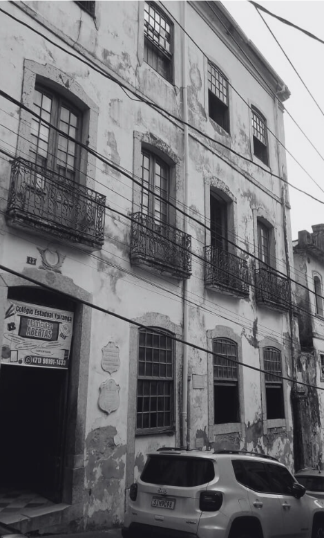
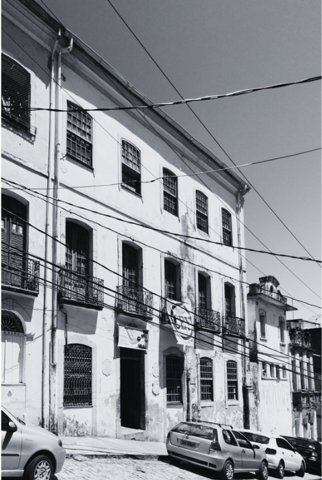
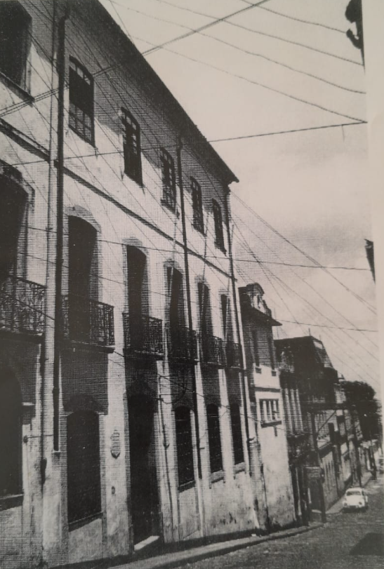
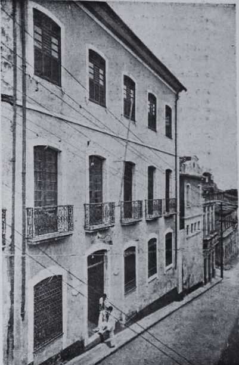
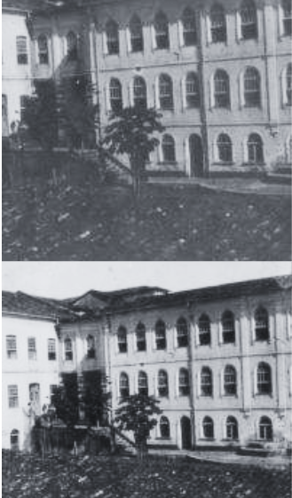
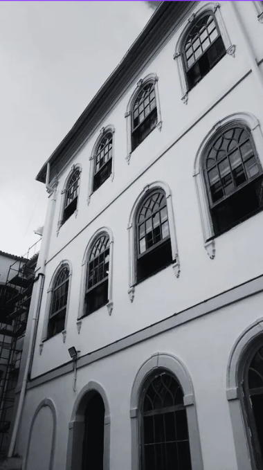
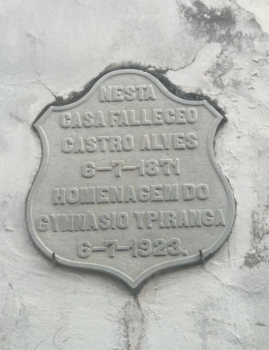
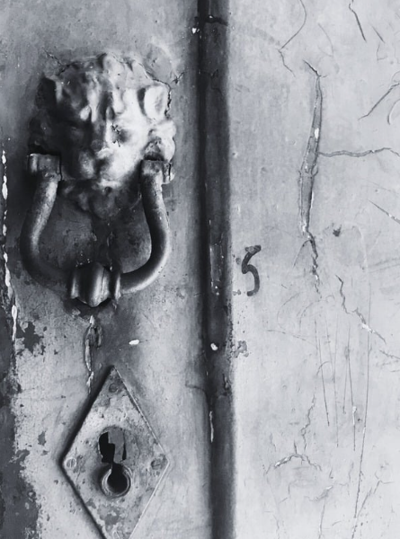
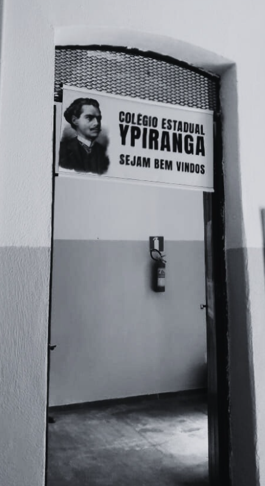
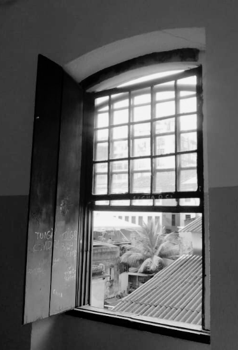
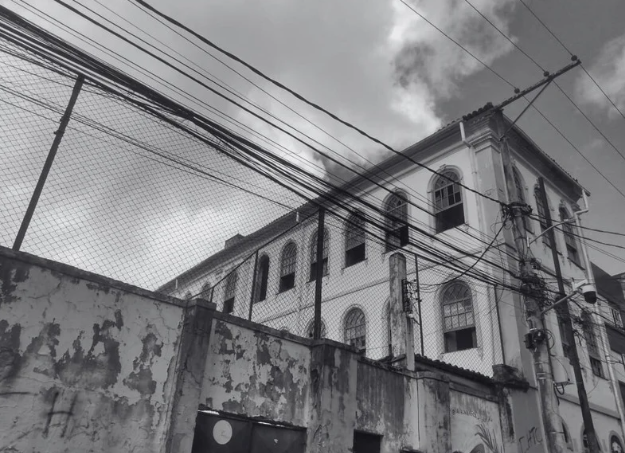
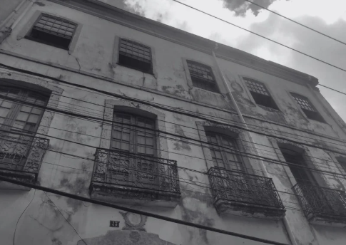
Alunos do Curso Técnico de Guia de Turismo do Colégio Estadual Ypiranga desenvolveram, em 2024–2025, um projeto de Iniciação Científica voltado para a preservação digital do patrimônio histórico da escola. A questão central que orientou a pesquisa foi: como garantir a preservação e divulgação do Colégio Estadual Ypiranga como patrimônio?
Entender o conceito de patrimônio por meio da história do Solar do Sodré e sua relação com a comunidade escolar.
Realizar sessão fotográfica do prédio histórico com apoio da Wikimedia, trazendo visibilidade ao Colégio.
Compor álbum para participação no EPA — Educação Patrimonial e Artística do Governo do Estado da Bahia.
Criar página sobre o Colégio Estadual Ypiranga na enciclopédia livre, retirando o colégio da zona de invisibilidade virtual.
Propor a composição do colégio como escola-museu, tendo como ponto de partida uma exposição dos álbuns patrimoniais como galeria artística na entrada do Colégio Estadual Ypiranga.
Criar site memorial digital e presença nas redes sociais do colégio como canal permanente de divulgação do projeto e da história do patrimônio, incentivando que mais pessoas conheçam o Solar do Sodré.
O projeto combinou pesquisa bibliográfica em sites e documentos históricos, registro fotográfico realizado pelos próprios estudantes com apoio institucional da Wikimedia Foundation, e redação colaborativa do verbete enciclopédico. Também foram utilizadas ferramentas de Inteligência Artificial para aprofundamento temático e análise histórica.
Hoje, podemos reconhecer que o Ypiranga já enfrentou muitas lutas, mas também conquistou vitórias incríveis — principalmente por continuar existindo. Por isso esperamos que seja reconhecido por sua comunidade local, preservado e divulgado virtualmente de forma contínua.